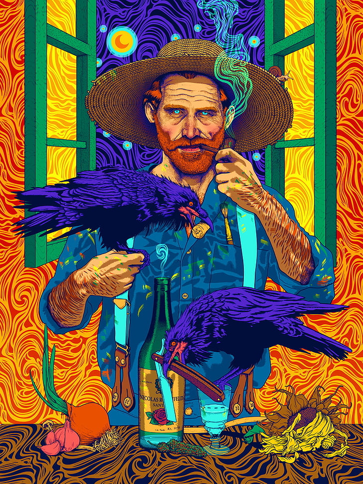

Van Gogh
Dali
Kahlo
Magritte
Michelangelo
Donatello
Picasso
Raffaello
Da Vinci
Van Gogh
Frida Kahlo
Curtido por Magritte e outras 1mi. de pessoas
Magritte Automation is out for
eveyone. They are comming to get us, dear,
View all $var comments
Raffaello Look
Donatello Robots can't yet paint
fine art, in such places. Maybe in 10 year
$var HOURS AGO
Pedrão
Liked by Responde Aí and other 30.000 people
Rumi There is a field out beyond ideas of wrongdoing and rightdoing there is a field. I'll meet you there.
View all $var comments
Picasso Very
deep,
Rumi When the soul lies down in that grass the world is too full to talk about.
Picasso Yeah... good old
$var HOURS AGO
Curtido por Alex Grey e outras 101.523 pessoas
Alex Grey Wow, you really did it, uhm, Van? Me and@Vinci were doubting
your habilities.
View all $var comments
Vinci@Alex Grey
Nah, I knew @Gogh could mix our two
paitings into one hell of an art.
Dali You guys always going nuts...
$var HOURS AGO